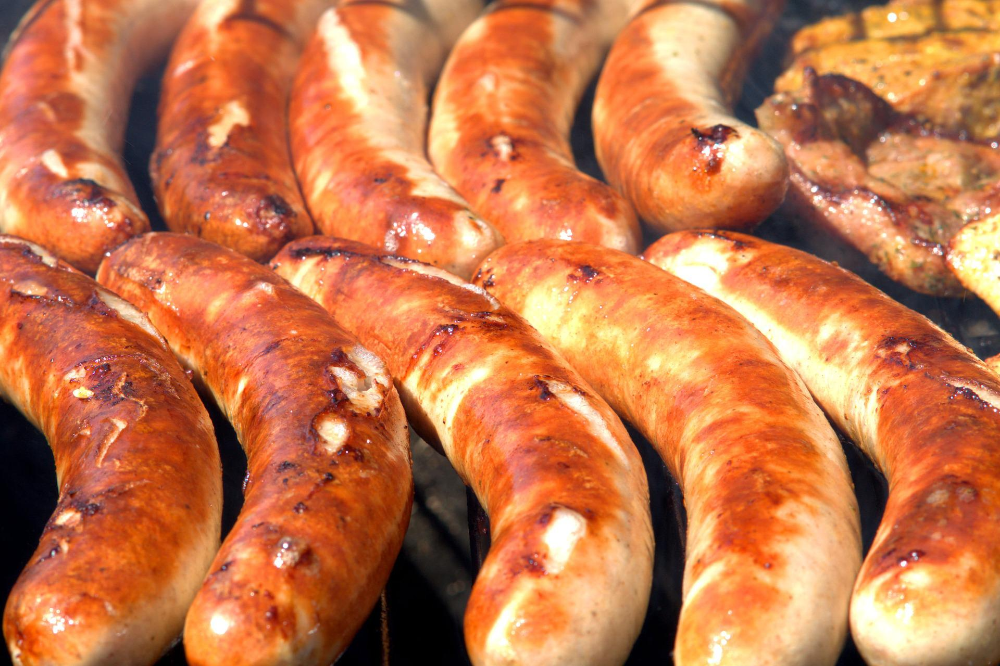

Oven Baked Sausage and Peppers

Description
This recipe is one of my all-time favorites. A staple of Little Italy, Sausage and Peppers is
an incredibly simple recipe that is bursting with flavor! This take on the classic dish pairs
the meal with rice, but feel free to substitute the rice with a sliced hero or sub, if you
are craving that!
This is also an oven-baked take on the classic sausage and peppers! Traditionally, this dish
is made on the stove-top, but I've found that baking the sausages makes them burst with flavor
and is truly ideal when it comes to clean-up afterwards! However, if you are looking for a quicker
meal, you can absolutely make the same dish on the stove top!
With just a few ingredients, you'll be on your way to making this amazing dish!
Ingredients
- Pack of 6 sausage links (Italian, either hot or sweet)
- One white onion
- One red pepper
- One green pepper
- Light olive oil
- Salt, ground pepper, and oregano to taste
- Preheat oven to 375 degrees.
- Clean and dice red and green bell peppers.
- Clean and thinly slice white onion.
- Add vegetables to clean baking pan.
-
Remove sausage from packaging. Slice the sausage from the top down in
order to split the outer casing. Peel the outer casing from the sausage
link, and slice the sausage into 5-6 pieces. Repeat for entire package.
-
Add sausage to baking pan, and lightly cover the vegetables and sausage
with olive oil.
-
Add salt, ground pepper, and oregano to the baking man and mix
throughout.
- Bake for 45 minutes
-
While sausage is baking, measure one cup of rice and set aside in a bowl.
Measure two cups of water, and add water to a pot. Bring water to a boil,
and add in rice. Reduce heat to simmer, cover pot, and cook rice for 20-25
minutes, or until water is absorbed. Remove from heat and keep covered.
-
Once both sausage and rice are finished cooking, add rice to bowl. Then
Add sausage and peppers on top. Serve with a side of salad or broccoli. Enjoy!